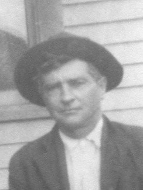

Samuel Miller 1871 -
[ Home ] | [ Calendar ] | [ Surnames Index ] | [ Census Index ] | [ Family History ]The child of Henry Miller and Charlotte Pool, Samuel Miller, the third cousin three-times-removed on the mother's side of Nigel Horne, was born in Indiana, USA in 18711. On Jun 1, 1880, he was living in Clay, Indiana, USA1.
Parents
- Henry William Charles was born on Jul 5, 1843
- Charlotte Maria was born on Feb 7, 1847
Citations
- Us Census 1880 - Findmypast (was age 9 and the son of the head of the household)
Media
Samuel Halliet Miller

Family Tree

Generated by ged2site. Last updated on Jun 11, 2024